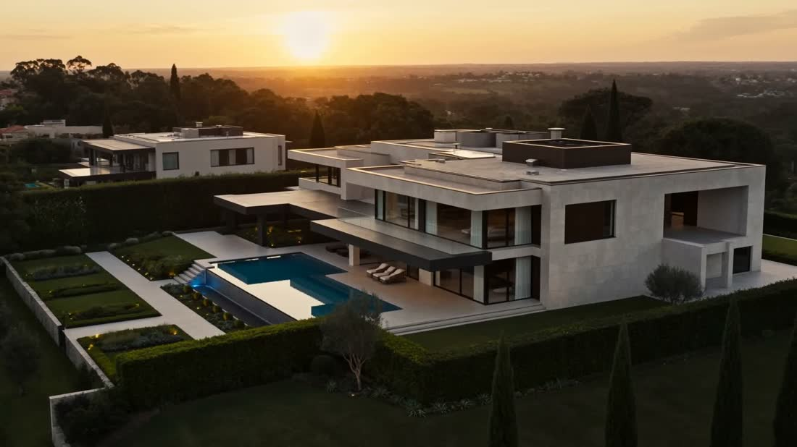
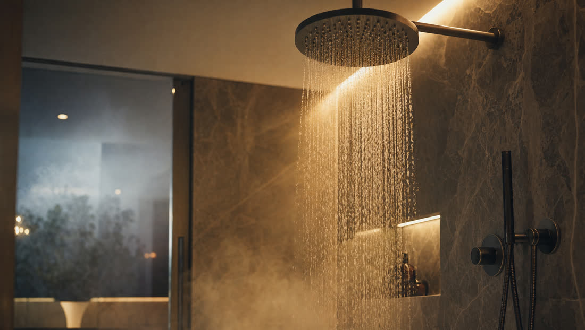
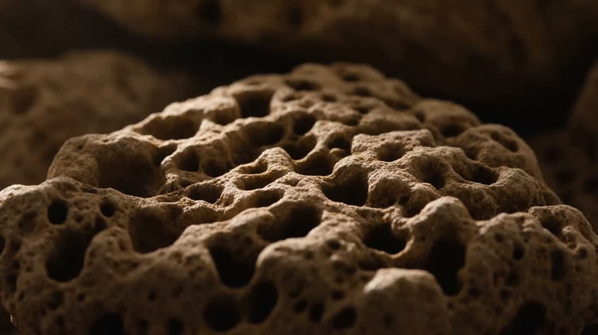
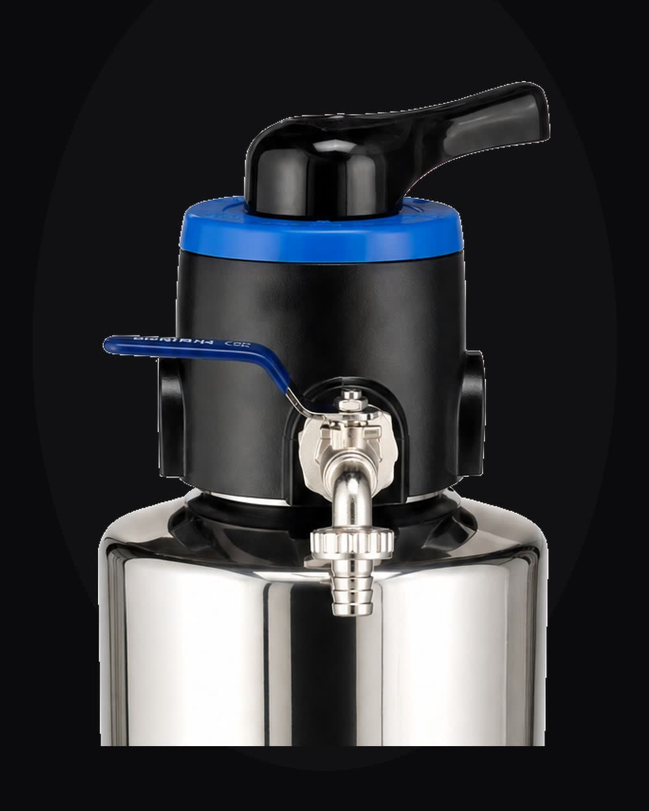
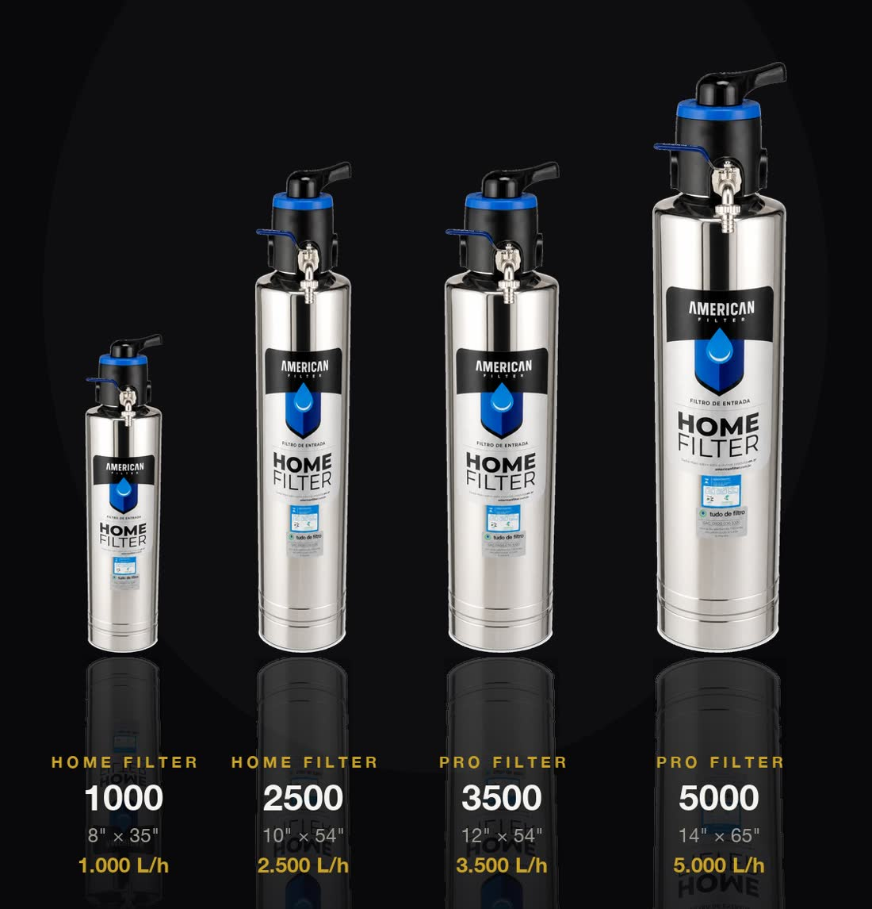
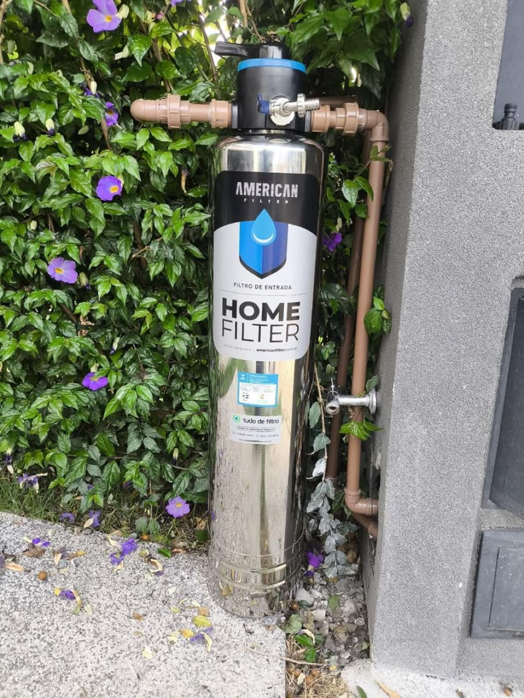
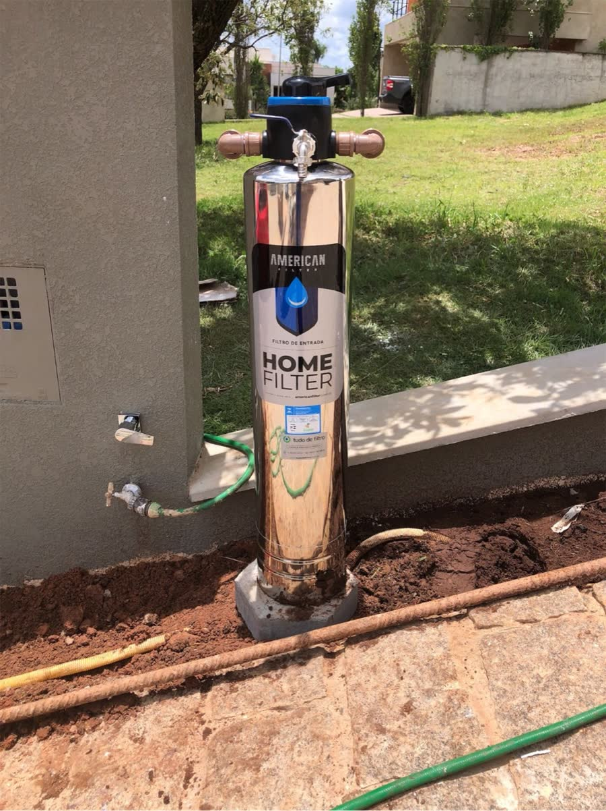

Filtro de entrada · a casa inteira
Catálogo e ficha técnica do filtro de entrada premium que trata toda a água que entra no seu imóvel.
O que é
O American Filter é um filtro de entrada: instalado no cavalete, junto ao hidrômetro, antes da caixa d'água. Toda a água que entra no imóvel passa por ele — e chega filtrada em todas as torneiras da casa, retendo barro, areia, silte, lodo e ferrugem.

Água sem sedimentos no chuveiro, na ducha e na banheira.
Louça, panelas e o preparo dos alimentos, livres de barro e ferrugem.
A mesma água tratada na pia do banheiro, todos os dias.
A mesma água filtrada da casa toda na vasilha dele.
Engenharia da água
Formam o leito de base que organiza o fluxo e retém os sedimentos suspensos.

Mineral natural de estrutura microporosa — refino dos sedimentos mais finos.
Partículas até 10× mais finas que um fio de cabelo. Barro, areia, silte, lodo e ferrugem ficam pra trás. Corpo em aço inox 304 com banho de níquel.

Válvula Runxin · manual ou automática
Referência mundial em controle de filtros. Manual ou automática — você escolhe o nível de praticidade.
Quatro tamanhos. Uma engenharia.

| Modelo | Medida (pol) | Medida (cm) | Vazão | Indicação |
|---|---|---|---|---|
| Home Filter 1000 | 8" × 35" | Ø 20,3 × 88,9 | 1.000 L/h | Residências e comércios |
| Home Filter 2500 | 10" × 54" | Ø 25,4 × 137,2 | 2.500 L/h | Apartamentos e casas médias |
| Pro Filter 3500 | 12" × 54" | Ø 30,5 × 137,2 | 3.500 L/h | Casas grandes / alto consumo |
| Pro Filter 5000 | 14" × 65" | Ø 35,6 × 165,1 | 5.000 L/h | Amplas, comércio, indústria, condomínio |
Especificações
| Modelo | Medida (pol) | Medida (cm) | Vazão | Pressão |
|---|---|---|---|---|
| Home Filter 1000 | 8" × 35" | 20,3 × 88,9 | 1.000 L/h | 1–3 kgf/cm² |
| Home Filter 2500 | 10" × 54" | 25,4 × 137,2 | 2.500 L/h | 1–3 kgf/cm² |
| Pro Filter 3500 | 12" × 54" | 30,5 × 137,2 | 3.500 L/h | 1–3 kgf/cm² |
| Pro Filter 5000 | 14" × 65" | 35,6 × 165,1 | 5.000 L/h | 1–3 kgf/cm² |
Certificação & garantia
anos de garantia
a maior garantia do Brasil
certificação máxima
Onde usar


Eleve o nível da sua água.
WhatsApp (12) 98285-5000
tudodefiltro.com.br · paulinhotdf.github.io/american-filter-site
American Filter é um filtro de entrada (point-of-entry) que retém sedimentos como barro, areia, silte, lodo e ferrugem (partículas de 5 a 15 mícrons). Não remove bactérias, vírus ou substâncias dissolvidas e não substitui purificadores de água para consumo. Para água de poço, consulte nossa linha específica. · Uma marca Tudo de Filtro.